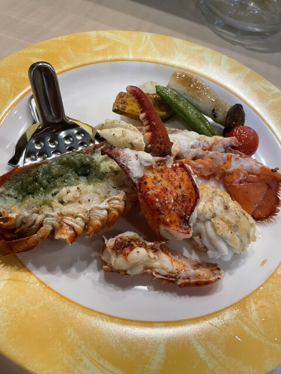
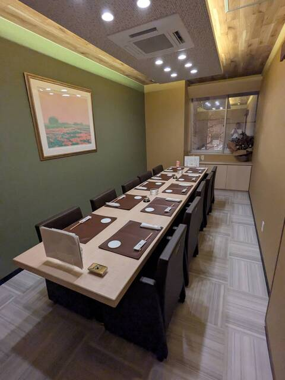

Photo Gallery
末広町の鉄板焼き専門店。シェフの前で焼き上げる道産牛や海鮮の鉄板焼きが評判で、特別な夜のディナーとして地元の食通に重宝される一軒。


釧路市末広町2丁目に構える鉄板焼 晃は、シェフが目の前の鉄板で食材を焼き上げるスタイルの鉄板焼き専門店です。食べログID1082050に登録されており、末広町エリアで特別なディナーを楽しみたい地元の食通に高く評価されています。
道産の和牛・豚・海鮮をシェフが熟練の技で鉄板に乗せ、絶妙な火加減で焼き上げる鉄板焼きのスタイルは、料理の過程そのものを楽しめるエンターテインメント性が魅力。月〜土の17時から22時まで営業しており、日曜定休のためビジネスディナーや特別な記念日に使いやすい。
「釧路で鉄板焼きならここ」と地元の美食家が口を揃える高評価店。シェフの包丁さばきとシズルが上がる鉄板の演出が食欲を刺激し、道産和牛の火入れの精度は絶品。脂の甘みと旨みを引き出した肉の焼き上がりは、肉の素晴らしさを改めて実感させてくれます。
海鮮の鉄板焼きも評価が高く、ホタテ・エビ・イカなど釧路産の食材が鉄板の上で最高のコンディションに仕上がる。特別な夜のディナーとして予約して訪れる価値のある一軒です。